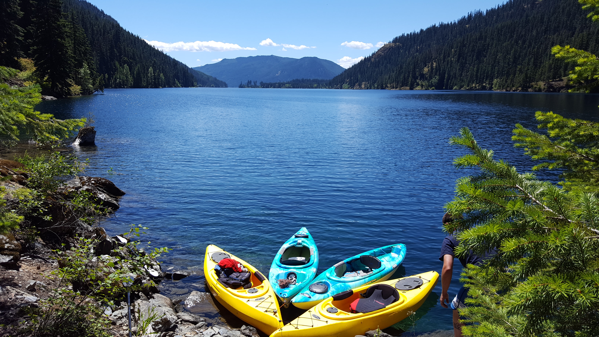

Bumpass Hell, Mt Lassen National ParkCrater Lake, OregonLake Valhalla, Snoqualmie PassMt. RainierHiking near Bellingham, WAPaul Bunyon and Babe the Ox, CaliforniaKayaking at Spada LakeBumpass Hell trailEagle Lake TrailRuby Beach, Olympic PeninsulaAn elk eating near the beach in California

Kayaking at Lake KachessAngel's Landing Trail, UtahOcean Shores, WAFrozen Lake near Cle ElumCamping near Shasta LakeLeavenworth, WA